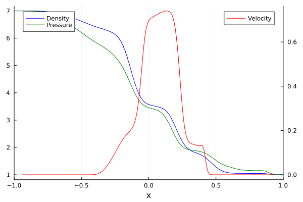

1D3V Shock Tube Example
This tutorial mirrors the setup from examples/Shock_1D3VSlab.jl with parameters chosen for the shock tube test case. It evolves a one-dimensional shock tube whose distribution function depends on all three velocity components ("1D3V"). Note: The grid is usually finer, and is coarsened for this example.
The 1D3V system evolves the moments $U_{(\alpha\beta\gamma)} = \int f\, v_x^\alpha v_y^\beta v_z^\gamma \,\mathrm{d}v$ with $\alpha+\beta+\gamma \le M$,
\[\partial_t U_{(\alpha\beta\gamma)} + \partial_x U_{(\alpha+1,\beta\gamma)} = S_{(\alpha\beta\gamma)}.\]
The moments of total order $M+1$ that appear in the flux are supplied by the (extended) Gramian closure, which is evaluated along a set of directions in velocity space (see GramianMomentEquations1D3V).
Load the necessary Packages
if !endswith(Base.active_project(), "../Project.toml")
import Pkg; Pkg.activate(".")
end # Runs in environment setup
using ExtGram, Trixi, OrdinaryDiffEq, Plots, StaticArraysSetup
Start with the number of moments, closure, Knudsen number and source term
M = 4
closure = "ExtGram" # possible: "Gram", "ExtGram" or "Grad"
Kn = 1.0
source = relaxation_source # if "zero_source" Kn doesn't matter, as no source termGeometry: slab symmetry or full 1D3V
GramianMomentEquations1D3V supports two geometries, selected with the keyword slab_geometry:
slab_geometry = true(slab geometry): the distribution function is assumed to be symmetric under $v_y \to -v_y$, $v_z \to -v_z$ and under the swap $v_y \leftrightarrow v_z$. Moments with an odd power of $v_y$ or $v_z$ vanish, and mirror images such as $U_{(020)}$ and $U_{(002)}$ coincide, so only the representatives $U_{(\alpha\beta\gamma)}$ with $\beta, \gamma$ even and $\beta \ge \gamma$ are evolved. This is the setting used by examples/Shock1D3VSlab.jl. It requires ``vy = v_z = 0`` in the initial data.slab_geometry = false(full 1D3V): all moments with $\alpha+\beta+\gamma \le M$ are evolved and no symmetry is assumed. Note that this solves a much larger system of PDEs and with that requires much more computational resources.
slab_geometry = true # slab geometry: 10 equations for M = 4
# slab_geometry = false # full 1D3V: 35 equations for M = 4The system sizes for the closure orders used in the examples are
| M | equations (full 1D3V) | equations (slab) | closure directions (full 1D3V) | closure directions (slab) |
|---|---|---|---|---|
| 4 | 35 | 10 | 21 | 4 |
| 6 | 84 | 20 | 36 | 6 |
| 8 | 165 | 35 | 55 | 9 |
Closure directions
The 1D closure is evaluated along $N_\text{shell}$ directions $n(\theta, \varphi)$ (the last two columns of the table above). By default a Fibonacci spiral on the hemisphere is used, which is well conditioned:
equations = GramianMomentEquations1D3V(M, Kn, closure; slab_geometry=slab_geometry)Alternatively, the directions can be prescribed with the keywords theta and phi. They must contain exactly $N_\text{shell}$ angles, so the angle sets of examples/Shock_1D3VSlab.jl (4 angles for $M = 4$) are only valid in slab geometry:
<!– skip –>
theta = [3.14159, 0.684719, 2.03444, 2.18628] # M = 4, slab geometry only
phi = [1.5708, 4.71239, 1.5708, 0.886077]
equations = GramianMomentEquations1D3V(M, Kn, closure; slab_geometry=true, theta=theta, phi=phi)Numerical settings and initial conditions
T_end = 0.3
base_tree_level = 8 # >=10 is advised, but let's speed it up a bit
polydeg = 1
x_lower = -2.0
x_upper = 2.0
# Fixed settings
domain = (x_lower, x_upper)The shock tube is initialized with two Maxwellians. Slab geometry requires vanishing transverse velocities.
ρ_L = 7.0
v_L = (0.0, 0.0, 0.0) # (v_x, v_y, v_z)
θ_L = 1.0
ρ_R = 1.0
v_R = (0.0, 0.0, 0.0)
θ_R = 1.0
initial_condition = InitialConditionsShockTube1D3V(
Maxwellian1D3V(ρ_L, v_L, θ_L), # Density, velocity, temperature
Maxwellian1D3V(ρ_R, v_R, θ_R), # Shock in density, but not velocity, temperature initially
M,
equations
)Set up the numerical solver
The shock capturing indicator uses $\rho\, U_{(200)}$, the analogue of $\rho\, U_2$ in the 1D1V setup. ExtGram.moment_val looks a moment up by its multi-index and therefore works in both geometries.
basis = LobattoLegendreBasis(polydeg)
# shock capturing
indicator_sc = IndicatorHennemannGassner(
equations, basis,
alpha_max = 0.15,
alpha_min = 0.001,
alpha_smooth = true, # smoothes with all neighboring indicators to remove numerical artifacts
variable = (u, eqns) -> u[1] * ExtGram.moment_val(u, 2, 0, 0, eqns) # ρ U_(200)
)
surface_flux = flux_lax_friedrichs
volume_flux = flux_central
volume_integral = VolumeIntegralShockCapturingHG(
indicator_sc;
volume_flux_dg = volume_flux,
volume_flux_fv = surface_flux
)
solver = DGSEM(basis, surface_flux, volume_integral)
mesh = TreeMesh(
(domain[1],), (domain[2],),
initial_refinement_level=base_tree_level,
n_cells_max=10_000,
periodicity=false
)
boundary_conditions = (x_neg = BoundaryConditionDirichlet(initial_condition), x_pos = BoundaryConditionDirichlet(initial_condition))
semi = SemidiscretizationHyperbolic(
mesh, equations,
initial_condition, solver,
boundary_conditions=boundary_conditions,
source_terms=source
)with the ODE problem
tspan = (0.0, T_end)
ode = semidiscretize(semi, tspan)and the callbacks. The visualization callback is restricted to a few moments by name, since the full system has 35 variables.
cfl = 0.99
alive_callback = AliveCallback(analysis_interval=100)
summary_callback = SummaryCallback()
stepsize_callback = StepsizeCallback(cfl=cfl)
plot_interval = 20 # plot every 20 steps
plot_callback = VisualizationCallback(
semi;
interval=plot_interval,
solution_variables=cons2cons,
variable_names=["U_(000)", "U_(100)", "U_(200)"],
plot_data_creator=PlotData1D,
plot_creator=Trixi.show_plot,
)
callbacks = CallbackSet(
summary_callback,
alive_callback,
stepsize_callback,
plot_callback,
)Solve the problem
sol = solve(
ode,
CarpenterKennedy2N54(
williamson_condition = false
);
dt = 1.0, # solve needs some value here but it will be overwritten by the stepsize_callback
ode_default_options()...,
callback = callbacks,
);
summary_callback()Post Processing
Density, velocity and pressure are obtained from the primitive (central) moments. cons2prim and ExtGram.temperature handle both geometries, so this block does not change with slab_geometry.
n_equations = nvariables(equations)
Fmat = reshape(sol.u[end], n_equations, :)
x = vec(semi.cache.elements.node_coordinates)
prim = [cons2prim(SVector{n_equations}(Fmat[:, i]), equations) for i in axes(Fmat, 2)]
rho = [w[1] for w in prim]
v = [w[2] for w in prim] # v_x
theta = [ExtGram.temperature(w, equations) for w in prim] # (P_(200) + P_(020) + P_(002)) / (3ρ)
p = rho .* theta
# Visualization
p1 = plot(xlims = (-1.0, 1.0), xlabel = "x");
plot!(p1, x, rho, color=:blue, label="Density", legend=:topleft)
plot!(twinx(p1), x, v, color=:red, label="Velocity", legend=:topright)
plot!(p1, x, p, color=:green, label="Pressure")
display(p1)Slab geometry (slab_geometry = true):

Full 1D3V (slab_geometry = false):